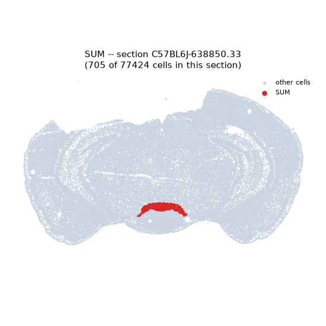
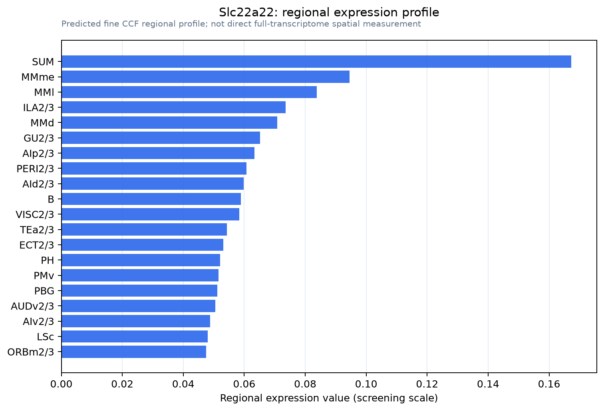

Slc22a22
Solute carrier family 22 member 22 (Prostaglandin-specific organic anion transporter)
Spatial tier: RESTRICTED · Class: GPCR · Top region: SUM (Supramammillary nucleus) · Positive regions: 13/554
45.3Discovery Score
35.1Targetability Score
CEvidence grade C
What this means: Slc22a22: fine CCF profile is restricted toward SUM (top regions: SUM, MMme, MMl, ILA2/3, MMd; 13 positive regions); direct spatial validation is still required.
Direct spatial evidence
MERFISH REGION LOCATOR

Regional expression figure

Predicted WMB × fine-CCF profile; not direct full-transcriptome spatial measurement.
Spatial profile
Evidence and specificity
- Evidence status
- PREDICTED_FINE
- Direct sources
- None; predicted localization only
- Exclusive threshold
- 12 positive regions out of 554
- Spatial specificity
- 0.328
- Top-region fraction
- 0.094
- Filter status
- PASS
Interpretation limits
- Cell-type-to-region projection is imputed expression, not direct spatial measurement.
- Adult reference atlases do not establish stability across age, sex, strain, state, or disease.
- Transcript abundance does not guarantee protein abundance or genetic-tool performance.